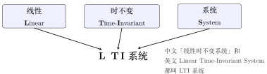
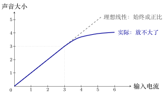
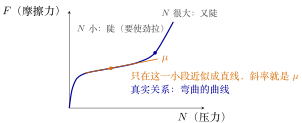

线性时不变（LTI）系统的定义¶
浙江大学 2022《信号与系统》（胡浩基）第二章开篇（教材第 35 页）听课笔记
1 LTI 是什么¶
第二章「LTI 系统的时域分析」（教材第 35 页）的研究对象是 LTI 系统，先给出它的定义。
1.1 名字¶
LTI 是 Linear Time-Invariant 的首字母：L 取自 Linear（线性），T、I 取自 Time-Invariant（时不变）。后面再加上 System（系统），就是 LTI 系统。

图 1 L 取自 Linear，T、I 取自 Time-Invariant；LTI 本身只是「线性时不变」，加上「系统」才是 LTI 系统。
重点
如果一个系统既线性、又时不变，就叫它线性时不变系统（Linear Time-Invariant System，简称 LTI）。两个条件必须同时满足：只满足一个、或两个都不满足，都不是 LTI。
线性指齐次性 \(+\) 叠加性，时不变指输入平移多少、输出也平移多少（定义见《典型的系统》）。
2 六个性质的英文对照¶
六个性质的中英文及反面：
| 性质（中文） | 英文 | 反面（英文） |
|---|---|---|
| 线性系统 | Linear System | non-linear |
| 时不变系统 | Time-Invariant System | time-variant |
| 因果系统 | Causal System | non-causal（也有写作 uncausal 的） |
| 无记忆系统 | Memoryless System | memory（有记忆） |
| 可逆系统 | Invertible System | non-invertible |
| 稳定系统 | Stable System | unstable |
三处英文要注意：
-
因果的反面：常见写法
non-causal，也有写作uncausal的。 -
不可逆写作
non-invertible；时变也写作time-varying。 -
可逆的拼写是
Invertible（-ible 结尾），不是Invertable。
3 为什么研究 LTI 系统¶
LTI 系统是本课程的重点，研究它有三个理由：① 为什么研究线性；② 为什么研究时不变；③ LTI 本身很简单。前两个说明「这两个假设为什么合理」，第三个说明「它为什么好算」。
3.1 理由一：线性¶
3.1.1 世界上没有绝对线性的系统¶
以喇叭为例（输入电流、输出声音）。齐次性做不到：通 1、2、3 单位电流，声音可以分别大 1、2、3 倍；但通 100、10000 单位电流时，声音不可能相应放大 100、10000 倍——任何物理系统都有极限。叠加性也做不到：一个人说话喇叭能放出，两个人、三个人叠加，总有一次放不下。

图 2 喇叭的输入–输出关系（示意，相对单位）。输入不超过 \(3\) 时，实际曲线与直线重合，输入翻几倍、声音就大几倍；输入再大，声音不再跟着变大（饱和），齐次性被打破。
重点
世界上没有绝对意义的线性系统：齐次性与叠加性在足够大的输入上都会被物理极限打破。
3.1.2 线性是合理的近似¶
结论：线性只是对现实问题的近似。理由不是「世界上有很多线性系统」，而是：现实系统太复杂，只能用最简单的模型——线性——去近似。
重点
研究线性系统的理由：没有绝对的线性系统，但线性模型是最简单的近似，工程上常用它分析复杂问题。
例 1 摩擦力公式 \(F=\mu N\) 线性近似
模型：压力 \(N\) 与摩擦力 \(F\) 的经验公式
它不是从基本规律推出的，而是经验近似。
▸ 推导。 设 \(F=S(N)\)，在 \(N=0\) 处作泰勒展开(Taylor expansion)：
假设没有压力就没有摩擦力（\(S(0)=0\)），且二次以上的项都近似为 \(0\)，则
（泰勒展开：光滑函数在一点附近可写成「直线 + 弯 + 更弯」的叠加；线性近似只留第一项。）记 \(\mu=S'(0)\)：\(\mu\) 就是曲线在 \(N=0\) 处的斜率。
▸ 适用范围。 \(\mu\) 并非常数：静摩擦时要使劲拉，\(\mu\) 较大；高速运动时 \(\mu\) 又变大。只有运动在合理范围内，\(\mu\) 才近似为常数。真实的 \(F\)–\(N\) 关系是一条弯曲的曲线：小 \(N\) 陡、中间平缓、大 \(N\) 又陡；只在中间取一小段，才能近似成直线（见下图）。

图 3 摩擦力和压力的关系（形状示意）：从原点几乎竖直上冲，拐弯后平缓，过了右边的点又往上翘。只在中间一段，\(F\) 才近似正比于 \(N\)。
这样近似并不精确，但不这样做就无法分析摩擦力与压力的关系：决定因素很多，只能取最简单的模型。
例 2 三极管 线性近似
模型：电路课把三极管三个引线的电流写成
即看成电流按固定比例 \(\beta\) 联系的线性器件。
图 4 三极管的线性模型：进去 \(I\)，上面 \(\beta I\)，下面 \((\beta+1)I\)。
按 NPN 三极管的标准符号，进线是基极(base)，上面是集电极(collector)，下面带箭头的是发射极(emitter)；\(\beta\) 是电流放大系数(current gain)，\(I_C=\beta I_B\) 正是一个线性关系。
实际：真实三极管并不严格满足这组线性关系，只在放大区近似如此。
不这样近似就无法分析三极管。更精确的做法是用 PSPICE、Protel 等电路软件里的非线性模型；手工分析或只需建立感性认识时，线性模型够用。
3.2 理由二：时不变¶
「时不变」的日常版：今天输入 \(x(t)\) 得 \(y(t)\)，明天输入同样的信号 \(x(t-t_0)\)，得同样的输出 \(y(t-t_0)\)；后天、永远如此，\(t_0\) 任意。
图 5 时不变的日常版：同一个信号晚 \(t_0\) 送进去，输出也只是晚 \(t_0\) 出来，形状不变；今天、明天、永远都如此。三行里的「系统」是同一台机器，它的脾气不随日子变。
绝对的时不变不存在。若有这种系统，世界就「不老」了。有些东西能在较长时间内不变，但连宇宙都可能毁灭，所以没有绝对意义的时不变系统。
那为什么还要假设？三个理由：
-
不假设就无法研究：时变意味着输出随时间无规律，无法预测。
-
研究时变系统也要先假定一个变化规律，否则无从下手。
-
即使系统时变，在很短一段时间内也可近似为时不变（例如一块肉隔几天才腐烂，中间几小时可视为不变）。
重点
研究时不变系统的理由：没有绝对的时不变，但时不变是对自然的合理近似；不假设，连研究都没法开始。
3.3 理由三：LTI 很简单¶
LTI 本身很简单，核心是下面这句：
重点
知道 LTI 系统的一个 \(x(t)\) 对应的 \(y(t)\)，就知道所有 \(x(t)\) 对应的 \(y(t)\)。
第二章那么多数学、公式，核心就是这一句；后面的卷积、冲激响应都在回答「怎么从那一个推出所有」。
可跳过
那「一个」不能是任意信号：取「输入恒 \(0\)、输出恒 \(0\)」，什么也推不出来。它必须是有代表性的信号——单位冲激 \(\delta(t)\)，其响应叫冲激响应。任意信号可拆成冲激的叠加（线性），每个冲激只是平移（时不变），所以知道 \(\delta(t)\) 的响应就能求任意输入的输出。
4 与《典型的系统》的关系¶
《典型的系统》讲「怎么判断一个系统有没有某个性质」；本笔记讲「为什么要关心这些性质」：给出 LTI 的定义、六个性质的英文、三个研究理由。判断方法见《典型的系统》，这里不重复。